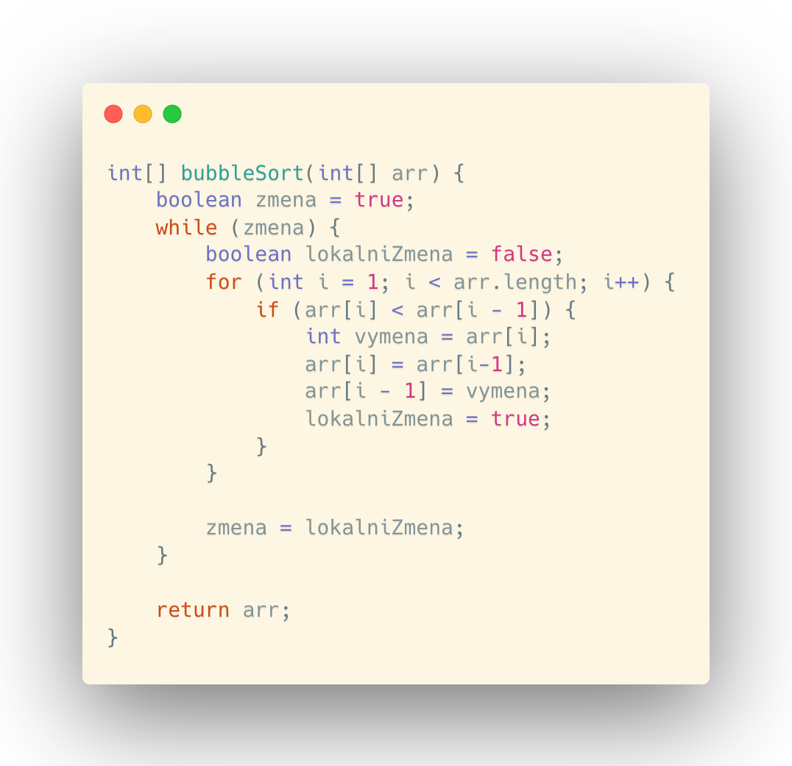

V této kapitole se podíváme na základní techniky, jak setřídit pole čísel dle jejich velikosti.
ROZDĚLENÍ ALGORITMŮ
Algoritmů, které řadí pole říkáme třídící algoritmy. Konkrétně se budeme bavit o algoritmech, jež dělají vnitřní třídění, což znamená, že pracují v RAM paměti a nekombinují příjem dat přímo z pevného disku. Existují tři základní metody třídících algoritmů.
- PŘÍMÉ METODY
- RYCHLEJŠÍ OBECNÉ ALGORITMY
- PŘIHRADKOVÉ METODY
Přímé metody jsou ty nejjednodušší algoritmy, které mají kole 10 řádků kódu, jsou on site a jejich časová složitost je kvadratická - O(n2)
Rychlejší obecné algoritmy jsou složitější (kolem 50 řádků kódu), ale jsou rychlejší. Jejich časová složitost se pohybuje kolem O(n * log n). Ke své práci potřebují další pole. Znovu se tedy setkáváme s fenoménem, kdy algoritmus za cenu vyšší rychlosti obětuje paměť. Dnes je to způsob, který programátoři požadují, neboť se již nesetkáváme s paměťovými nedostatky.
Přihrádkové metody jsou poměrně specifické algoritmy. Dosahují až lineární časové složitosti O(n). K jejich chodu je ale třeba znát urřité detaily o vstupních datech např. zda to nejsou celá čísla nebo známe jejich rozmezí.
SELECT SORT
Tento algoritmus patří do rodiny přímých metod. Jeho asymptotická časová složitost odpovídá O(n2). Funguje tak, že prochází pole, kde nalezne minimum a toto minimum vloží na začátek pole. Dále pokračuje v hledání nového minima, ale začne s ověřováním až druhého prvku pole. Po nalezení umístí nové minimum na druhou pozici a tekto pokračuje dále.
INSERT SORT
Tento algoritmus patří do rodiny přímých metod. Jeho asymptotická časová složitost odpovídá O(n2). Funguje tak, že od začátku prochází pole. Každou hodnotu, na kterou narazí, si vyzvedne a zařadí ji, kam dle velikosti patří. Zařazení probíhá tak, že pole začne od konce procházet. Když najde číslo, které je větší než vyzvednuté číslo, pak vyzvednuté číslo zařadí před číslo, se kterým bylo porovnáno.
BUBBLE SORT
Tento algoritmus patří do rodiny přímých metod. Jeho asymptotická časová složitost odpovídá O(n2). Funguje tak, že od začátku prochází dvojice prvků v poli a kdykoli nejsou správně srovnané, tak je vymění. Takto pokračuje do doby, kdy po průchodu celým polem neudělá výměnu.
MERGE SORT
Tento algoritmus patří do rodiny rychlejších obecných algoritmů. Jeho asymptotická časová složitost odpovídá O(n * log n). Algoritmus postupně rozděluje pole na jednotlivé prvky a ty potom začne slévat (proto název merge sort). Slévá je do většího pole např. [1] a [2] by slil do pole [1, 2]. Takto pokračuje dokud nesleje celé pole a už nezbývají žádné prvky tzn. [1, 2] a [3, 4] by slil do pole [1, 2, 3, 4], atd.. Následující ukázka je napsána rekurzivně, což je pro nás nový pojem. Znamená to, že metoda volá ve svém těle sama sebe. Dále samotné pole nevrací, neboť se nevytváří kopie pole, pokud ho předáváme hlavičkou metody, ale pracuje se se stejným kusem paměti.
pozn. zdroj následující ukázky
VNĚJŠÍ TŘÍDĚNÍ
Vnější třídění je způsob, jak setřídit pole/čísla v souboru, když nemůžeme tato načíst do paměti RAM. Nejefektivnějším a vhodným algoritmem je vnější merge sort. Ten třídí jednotlivé části, které načítáme do paměti.
Pokud čteme z binárního souboru jednotlivé části, je nutné si dát pozor na seekování. To je jev, který se stává, když čteme po jednotlivých hodnotách ze souboru nesekvenčním způsobem. Je to nevýhodné, protože když se načítá jednotlivě do paměti z SSD/HDD disku, pak počítač najde celý sektor s daty. Z tohoto sektoru načte jednu hodnotu a celý sektor zahodí. Naopak, když načteme větší část souboru, sektor je nalezen méněkrát. Ušetříme tak několik poměrně zdlouhavých operací s pamětí.